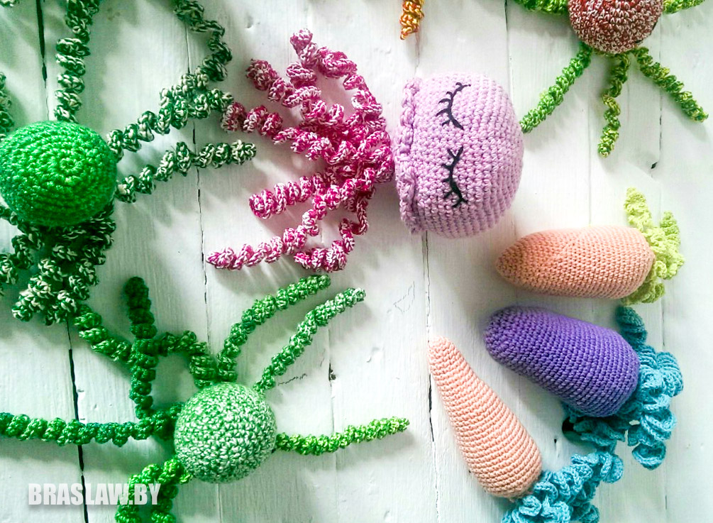

«Вязаный уют»: как семья Пальчевских из Браслава превратила хобби в работу

В начале апреля в рядах киосков по улице Октября (возле "Пинскдрева") открылась семейная творческая мастерская «Вязаный уют». Тут покупают товары для вязания и сувениры, заказывают вязаные крючком изделия, а еще тут появилась идея о создании клуба вязания для недоношенных детей «28 петель.».
КАК ХОББИ СТАЛО РАБОТОЙ
Хозяева мастерской - Анатолий и Марина Пальчевские. Идейный вдохновитель ‒ супруга, которая ещё в школе полюбила вязание крючком и осваивала его в Центре детского творчества.
«С 4 класса вяжу постоянно и интерес не пропадал. Поначалу вязала для себя или как подарок знакомым. Когда была в декретном отпуске с первым ребенком и появилось больше времени для вязания, в Браславе открылся магазин сувениров «Пад горой». Тогда я впервые попробовала продать свои изделия. И дело понемногу пошло. Потом начала работать с «Островом подарков».
В следующем году нужно было выходить из декретного, а возвращаться на старую работу не хотелось. И тогда с мужем подумали, что здорово было бы открыть своё дело. Тем более Анатолий ездил на работу в Вильнюс, а семье с двумя детьми это не подходило. Марине самой было бы выгоднее закупать нитки оптом, чем в розницу. Начали продумывать идею создания магазина, ассортимент. И к июлю 2019 года запланировали открыться. Но одна фраза в мотивационной книге подтолкнула сделать это раньше: «Почему не сегодня?».
Семья открыла ИП. Работать с бухгалтерией Марине помогали знания с прошлой работы. Много информации пришлось искать в интернете, обращаться к юристу за консультацией. Супруг-строитель сделал стеллажи для мастерской. Сложнее было с юридической стороной вопроса. Но в этом Марине помогли владельцы «Острова подарков». С первого месяца работы неожиданно вышли «в плюс» ‒ заработали 6 рублей.


«Если бы сейчас начинали с нуля, я бы уже не решилась. Мало правовой информации на месте, всё приходится искать, да и ездить в другой город за кассовым аппаратом или товаром везде приходиться с детьми, на бабушек их не всегда оставишь. Но тогда была сильная мотивация и желание, которое пропадает с каждым днем, ‒ с улыбкой продолжает Марина. ‒ Собственное дело – работа, которая не заканчивается в 17.00. Чем больше времени вкладываешь, тем больше прибыли. С мужем работаем в магазине по очереди, вечером стараемся быть с детьми, а по ночам что-то доделываю для мастерской. Воскресенье в нашей семье – день свободный от работы, даже в мыслях. Иногда хочется всё бросить и пойти на обычную работу, где заранее знаешь день, когда тебе выплатят зарплату. Но мы считаем, что имея своё дело, сможем дать больше своим детям. Не в материальном плане, а в плане развития и воспитания, уча их, что многого можно добиться собственным трудом».

Сегодня в магазине изделия Марины и других ремесленников Браслава. Хозяйка свяжет клиенту всё, что угодно (от детских игрушек до одежды и шляп), оформит подарок в крафт-упаковку. У ребят есть бесплатная доставка по городу при заказе на сумму от 10 рублей. Конечно, придётся расширять ассортимент, так как у туристов спрос на мелкие сувениры.


В этом году Пальчевские сделали «озёрный» уголок с водной тематикой. Марина сама собирает пляжный песок, ракушки и перья местных чаек, чтобы потом эту красоту забрали с собой на память все желающие.
«Здесь я продаю вещи, которые люблю, и если какая-то вещь мне не нравится самой, она никогда не попадет на прилавок»
ДОБРОЕ СЕРДЦЕ
Ещё одна мечта Марины – создать в Браславе клуб вязания одежды и игрушек для недоношенных детей. «28 петель» ‒ так называется клуб, именно столько их нужно набрать, чтобы начать вязать носочек для недоношенного ребенка. Этот проект появился в Казахстане и теперь пришел в Беларусь. Суть заключается в том, что вяжутся шерстяные вещи для недоношенных детей (рождённых ранее 37-38 недель беременности). Таких ежегодно в нашей стране рождается 4-4,5 тысячи. Шерсть даёт раздражающий эффект, не позволяя детям глубоко заснуть, что для них опасно – могут не проснуться. Обычно вяжут шерстяные носочки, шапочки, пледики или хлопковые игрушки, которые не дают малышам срывать с себя провода. В Витебской области роддома не принимают такую одежду, поэтому Марина поддерживает связь с куратором в Минске.
Первая встреча прошла в канун Дня защиты детей. Руководство браславского РЦК пошло Марине навстречу и предложило помещение. В итоге на мастер-классе связали 4 игрушки-осьминожки. А ещё 6 таких игрушек передали те, кто не пришел, но сделал их самостоятельно по схемам.
«После того, как у меня родились дети, стала особо чувствительной: недоношенных, брошенных, хочется обнять, подарить тепло, помочь. Когда услышала об этом проекте поняла, что я могу это делать: посредством своего хобби дарить частичку любви и заботы деткам. Думаю, если б сама родила недоношенного малыша, и мне бы оказали такую помощь – была бы рада. Хотелось бы, чтобы и все думали не только о себе, но и делали что-то для других. Тем более, когда это не требует затрат, а лишь желания и немного времени».
Первую посылку с осьминожками Марина отправит на днях. Благодаря встрече, она познакомилась с заинтересованными людьми, узнала, что в нашем городе раньше были две женщины, которые вязали такие вещи и сами отправляли их куратору. Клуб даст возможность встречаться, знакомиться и общаться вязальщицам.
Всех, кого заинтересовала идея клуба «28 петель», обращайтесь за информацией к Марине ВК или по телефону +375 (29) 256 38 41.
текст и фото Светлана Жилевич